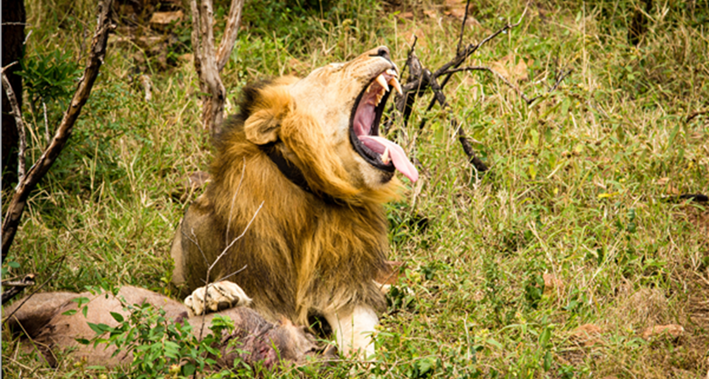
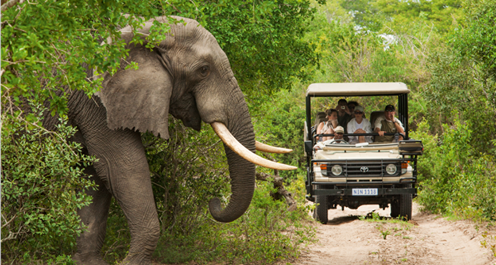
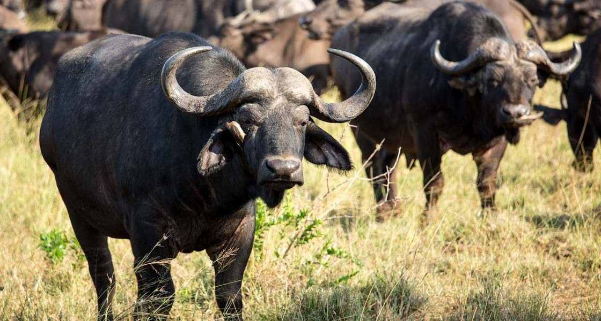
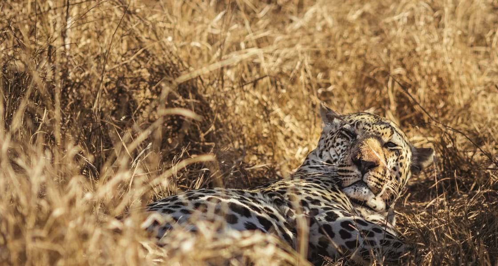

-
The Lion
The lion is arguably the most sought-after of the Big Five because it is synonymous with an African safari. Charismatic, powerful and beautiful, everybody wants to see the appropriately named 'King of the Beasts'.
Once, hundreds of thousands of lions roamed the world, but today conservationists give approximate numbers of between 25 000 and 30 000 left, most in sub-Saharan Africa. In South Africa, your chances of seeing lions are high, whether in our national parks or in private game reserves.
Lions are creatures of the savannah and open plains (you’ll rarely find them in a forest) and function in prides, usually numbering about five to 15, depending on the territory – although the Kruger National Park is known to have at least one big pride of up to 25 animals.
They are social family animals – related females rule, usually alongside a large dominant male that has won the pride in fierce competition with other males. Lionesses stay with the pride, while young males leave at two to three years of age. Males sometimes form coalitions to enhance their hunting success, but you’ll rarely see one with more than four lions.
Lionesses start breeding at four years old, and typically give birth to a litter of three or four cubs after 14 to 15 weeks of gestation. Lionesses of the same pride often give birth at or near the same time as their ‘sisters’, which allows for communal suckling and round-the-clock care.
And don’t expect to see an old lion – they are defeated in battle, often die of their wounds or are no longer able to hunt. Lions are in their prime from five to nine years of age. Male lions, once they’ve taken over a pride, have to work hard to keep it. Younger males – with attitude – are always on the sidelines.
Some prides specialise in hunting certain animals and develop specialised skills for this prey of choice – young elephants, ostrich, wildebeest.
Lions have no natural enemies other than hunters, although lion cubs fall prey to nomadic male lions that kill them in attempting to take over a pride. Hyenas, leopards and wild dogs also kill lion cubs. -
The Elephant
Perhaps it’s the African elephant that should be called ‘King of the Beasts’ – it is the world’s largest and heaviest land animal. Its ears alone measure up to 2m x 1.2m (roughly the size of the surface area of a double bed) and can weigh up to 20kg (44lb) each, while it can grow to a height of more than 3m.
Elephants abound in South Africa – you can see great herds of more than 100 in the Kruger National Park or smaller breeding herds in private reserves.
Elephants are highly social animals and females rule. A herd will typically have a matriarch with vast cultural knowledge that leads the herd, keeps it under control and chooses its direction and pace. Even when feeding (and an adult elephant, arguably nature’s most versatile vegetarian, can eat up to 300kg of grass, bark, branches and foliage a day), the herd rarely strays far from the matriarch.
Young bulls leave the herd when they become teenagers and either live alone, form bachelor herds or seek the company of old lone bulls that have long left the herd.
Your first sighting of a tiny baby elephant will be one of your most indelible memories. How do these small creatures, some not yet reaching up to their mother’s tummy, avoid being stepped on or crushed by the herd? Mother, sisters, aunts and cousins are always on the alert. Watch how mothers protect their babies by always putting themselves between danger and their offspring, and how the whole herd immediately goes into protective group defence mode when threatened.
If an elephant trumpets, you’ll certainly hear it, but the infrasonic tummy rumbles they use to communicate with one another are most often too low for the human ear to pick up – although research shows that these calls have an elephant range of up to several kilometres.
And just because elephants are huge, don’t think they are slow; if a herd takes fright, or needs to move on quickly, elephants can reach speeds up to 40km/h – faster than you can run.
Elephants love water. To see a herd drinking, playing, splashing, swimming and dunking in the water will be another of your favourite safari memories. -
The Buffalo
Don’t be fooled by the docile appearance of the Cape buffalo (also known as the African buffalo). This mean, moody and magnificent animal is possibly the most dangerous of the Big Five, especially if you are on foot.
Robert Ruark, the American novelist, wrote that ‘a buffalo always looks at you as if you owe him money’. Come face to face with a buffalo (preferably from the safety of a vehicle), and you’ll see exactly what Ruark meant – the stare is cold, calculating and cunning.
Buffalos are social animals and move around in large herds – sometimes of many hundreds – chomping long grass as they collectively move and feed. In the dry season, you can often see a cloud of dust signalling an approaching herd.
Buffalos have to drink daily, and to witness a large herd approaching a waterhole – often in the early morning or late afternoon – is a memorable and noisy experience.
It’s quite easy to tell the males from the females. The males are blacker, bigger and have huge powerful horns that are joined in the middle to form a ‘boss’. When buffalos fight for rank and females (buffalos are non-territorial and don’t fight for territory like some others of the Big Five), the noise of the clashing and crashing of their bosses is awesome. It is estimated that the impact of their horns’ collision is equal to a car hitting a wall at 50km/h.
Females are smaller, more reddish-brown in colour, and their much narrower horns don’t meet in the middle. Calves are usually born in the rainy season, and although they can stand up on wobbly legs immediately, it takes several weeks until they can keep up adequately with the herd.
Although most of a buffalo’s senses are well developed, it’s their super-charged hearing that helps them find food and alerts them to danger. There’s usually a dominant male – or more if the herd is huge – that stays in the middle of the herd, as well as ‘pathfinders’, which may not be the biggest and best, but lead the herd and keep it together.
You may also see a group of old bulls together – caked in mud from wallowing.
These are known as ‘Dagha Boys’ after the ‘dagha’, or mud, the Zulus used to build their traditional huts.
It’s quite easy to tell the males from the females. The males are blacker, bigger and have huge powerful horns that are joined in the middle to form a ‘boss’. When buffalos fight for rank and females (buffalos are non-territorial and don’t fight for territory like some others of the Big Five), the noise of the clashing and crashing of their bosses is awesome. It is estimated that the impact of their horns’ collision is equal to a car hitting a wall at 50km/h.
Females are smaller, more reddish-brown in colour, and their much narrower horns don’t meet in the middle. Calves are usually born in the rainy season, and although they can stand up on wobbly legs immediately, it takes several weeks until they can keep up adequately with the herd.
Although most of a buffalo’s senses are well developed, it’s their super-charged hearing that helps them find food and alerts them to danger. There’s usually a dominant male – or more if the herd is huge – that stays in the middle of the herd, as well as ‘pathfinders’, which may not be the biggest and best, but lead the herd and keep it together.
You may also see a group of old bulls together – caked in mud from wallowing.
These are known as ‘Dagha Boys’ after the ‘dagha’, or mud, the Zulus used to build their traditional huts. -
The White Rhino

Your first impression will be of its bulk and size. And then you may wonder how such a prehistoric-looking animal has existed for so many millions of years. Although unfortunately, the brutality and intensity of present-day poaching is a serious threat to the continuing survival of the species.
The second-largest land mammal, the white rhino’s name has nothing to do with its colour. It was the early Dutch settlers who referred to the animal’s broad lips as ‘wyd’ (wide), misinterpreted later as ‘white’.
This is a remarkable animal, weighing in at nearly 2 500kg (about 5 500lb) and often living up to 40 years of age. Because it is a grazer, eating thick, tough grass, it needs lots of water to digest its food, and needs to drink at least once daily. Sometimes you’ll see a rhino eating mud or soil, which acts as a dietary mineral supplement.
Its horn is used for fighting and defence and is not attached to the skull in any way.
Females live together in small groups, individuals breaking away when a determined bull decides to mate. Only one calf is born to a female at a time; the cow is very protective of her calf and will fight off an aggressive bull if necessary.
The calf always runs in front of its mother if they are fleeing from danger (a black rhino calf, on the other hand, will run behind its mother).
You’ll often find a white rhino resting in shade in the heat of the day or wallowing in mud. The dried mud acts as a sunscreen, a cooling agent and helps evict parasites that break off with the dried mud.
Look out for rhino middens beside the road. These are huge heaps of dung, used regularly by a particular male rhino to mark his territory. Females and non-dominant bulls also defecate on these middens, which act as markers and information signals to other rhinos.
Rhinos have poor eyesight but a fantastic sense of hearing and smell; watch a rhino’s ears – they constantly rotate in all directions as it works out what’s going on around it. And don’t think that because it’s so big and ungainly it’s a slow animal. If it’s running away (or chasing you), it can reach speeds of 40km/h. -
The Leopard
The one animal everybody wants to see – beautiful, charismatic, sexy and dramatic – and also the most elusive. The leopard is a solitary animal (unless mating, or a mother with cubs) and will, whether male or female, fiercely defend its own hunting territory from other leopards.
Considered to be one of the most successful, if not the most successful, of all African predators, the leopard is a master stalker. If you are lucky, particularly on a night drive (as leopards are nocturnal animals), you may see a leopard stalking its prey – silently, ruthlessly – before getting to within 5m of the prey and then launching itself with a powerful spring. Surprise is its chief means of attack.
Leopards often athletically drag their prey up into trees (sometimes the dead animal is as heavy as the leopard) to avoid having it pirated by other animals, particularly lions and hyenas.
Look out for thick overhanging branches of big old trees – you may well find a leopard snoozing there during the hottest part of the day, or snacking on its prey.
Leopards take great pains to advertise their territories by scent marking, scraping the ground and defecating in exposed spots. They try to avoid confrontation with other leopards (unless protecting their territory) because, as solitary hunters, they can’t afford to get injured.
Leopards make great mothers and take excellent care of their offspring, moving them from one place of safety to another when the cubs are very small – just as well, because young cubs are vulnerable to other leopards, lions, hyenas and wild dogs. Take a look at the black markings behind the ears and white tip of a mother’s long tail – these are signals for small cubs to follow.
That long tail is also used as a rudder for balance when the leopard is climbing a tree or hunting. A leopard also has long whiskers that it uses as antennae to judge spaces between bushes and trees – an essential tool for an animal that hunts at night.